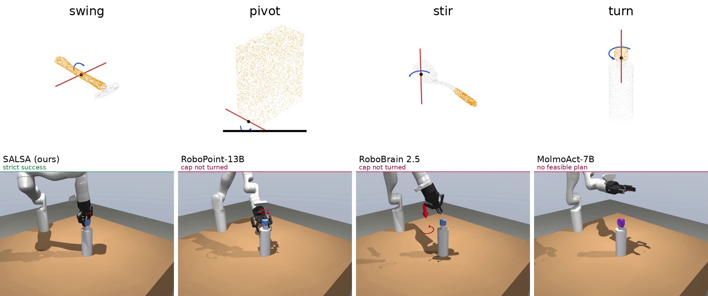
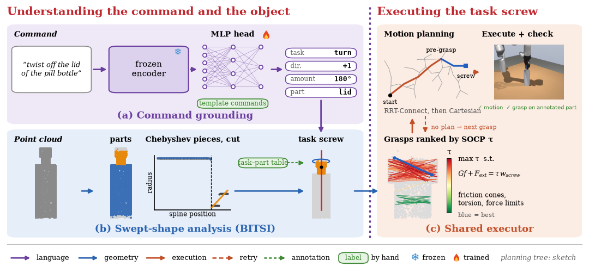
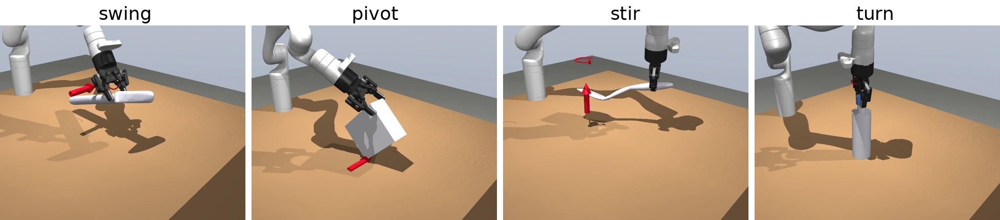
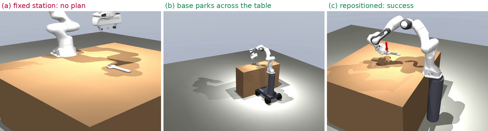

SALSA
Screw Affordances from Language and Swept-Shape Analysis
CoRL 2026 Workshop · Open Problems in Contact-Rich Loco-Manipulation

Abstract
When commanding robots, non-expert users rely on simple natural-language commands, such as “turn the bottle cap,” to express the task they want the robot to complete. In contrast, a robot can complete that task only if the task is expressed in geometric terms, such as where on the object to make contact and what motion to use.
To bridge this gap on object point clouds, our method, SALSA (Screw Affordances from Language and Swept-Shape Analysis) maps a user command to an executable task screw and a robot grasp. SALSA uses a frozen language encoder with a trained MLP head to select the predefined task screw that best fits the command, and a swept-shape analysis method that locates the inflection points of a Chebyshev polynomial fitted to the object’s profile along its principal axis to localize the graspable region. These are combined with an off-the-shelf antipodal grasp sampler, a grasp quality ranker and a motion planner.
With every method given the commanded task, SALSA reaches 42.7% / 63.4% strict success on the Kinova Gen3 / Franka Panda manipulators, compared with 35.4% / 46.3% for the best of nine open-source baselines on 164 held-out language commands over real scanned tools and objects in simulated execution.
Method

Results


Screw Atlas
Browse every test item →450 commands across tracks S / A / R, plus bread slicing (K) and screwdriver fastening (F). Each card shows the executor task screw, command, verb and task. Tap to enlarge and play the robot execution clip (304 Kinova clips; green = success).